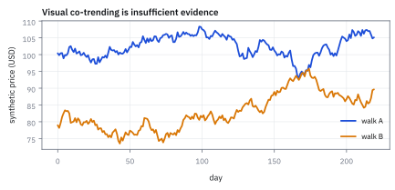
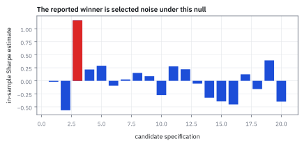
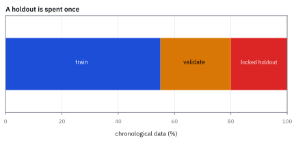
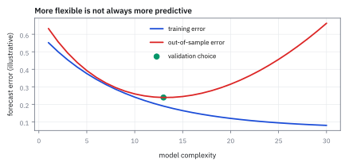

15.5 Spurious Regression and Overfitting
กันไม่ให้แบบจำลองจำอดีตจนสอบอนาคตตก
ถดถอยราคาหุ้นสองตัวที่เดินสุ่มอิสระกัน 750 วัน ได้ R² 0.70 และ t 42 เชื่อได้ไหม และข้อมูล 750 วันที่ autocorrelation 0.1 รองรับตัวแปรได้กี่ตัว?
เฉลย: เชื่อไม่ได้ Durbin–Watson 0.021 บอกว่า residual แทบไม่ขยับ t จริงเล็กกว่าที่พิมพ์ราว 14 เท่า ถดถอยบนผลตอบแทนแล้ว R² เหลือ 0.0006 ข้อมูลมีค่าเท่า 614 วันอิสระ รองรับได้ราว 20 ตัว
ศัพท์ที่ใช้ในหัวข้อนี้
- spurious regression
- regression ที่ดูมี fit หรือ significance เพราะ non-stationary series share trend โดยไม่มี relation ที่ใช้ทำนายได้ ใช้เตือนให้ transform และ test series ก่อนตีความ
- overfitting
- การปรับ model จนจับ noise เฉพาะ sample มากเกินไป ใช้อธิบายเหตุที่ performance นอก sample ลดลง
- in-sample
- ช่วงข้อมูลที่ใช้เลือก model และ parameters ใช้สร้าง candidate แต่ห้ามใช้เป็นการทดสอบสุดท้าย
- out-of-sample
- ช่วงข้อมูลที่ model ไม่ได้ใช้ในการตัดสินใจ design ใช้ประเมิน generalization อย่างซื่อสัตย์
- data snooping
- การลอง hypotheses หรือ parameters มากแล้วรายงานเฉพาะผู้ชนะ ใช้ชี้ multiple-testing bias
- walk-forward validation
- protocol ที่ fit ด้วยอดีตแล้ว test บนอนาคตและเลื่อน window ไปข้างหน้า ใช้รักษา time order ของ decision
- Sharpe ratio
- ผลตอบแทนส่วนเกินเฉลี่ยหารด้วย standard deviation ของผลตอบแทน ใช้เปรียบผลตอบแทนต่อความผันผวนภายใต้ horizon และ annualization ที่ระบุ
- random walk
- อนุกรมที่ระดับใหม่เท่ากับระดับเดิมบวก shock ใหม่ ใช้เป็นตัวอย่าง non-stationary process ที่สร้าง regression ลวงได้
- look-ahead bias
- อคติจากการใช้ข้อมูลที่ยังไม่พร้อม ณ เวลาตัดสินใจ ใช้ตรวจ timestamp ของ features, labels และ universe ก่อนเชื่อ backtest
- Bonferroni correction
- การปรับระดับนัยสำคัญด้วยการหาร alpha ด้วยจำนวนการทดสอบเพื่อคุม false positive ใช้ทดสอบสมมติฐานเมื่อมีการค้นหากลยุทธ์จำนวนมาก
- Durbin–Watson statistic (DW)
- ตัวเลขที่วัดว่า residual ของวันติดกันต่างกันแค่ไหน ใกล้ 2 คือปกติ ใกล้ 0 คือแบบจำลองพลาดทางเดียวกันติดกัน ใช้จับ regression ลวงบนระดับราคา
- effective sample size
- จำนวนตัวอย่างอิสระเทียบเท่าเมื่อข้อมูลมี autocorrelation ใช้คำนวณ standard error และ degrees of freedom ที่แท้จริง
สัญลักษณ์ที่ใช้ในหัวข้อนี้
| สัญลักษณ์ | ความหมาย | หน่วย |
|---|---|---|
| $P_t$ | ระดับราคาของหุ้น | USD ต่อหุ้น |
| $r_t$ | simple return ของหุ้น | decimal return ต่อวัน |
| $R^2$ | ตัววัด fit ใน in-sample | unitless |
| $M$ | จำนวน specifications ที่ลองทั้งหมด | models |
| $\hat\theta_k$ | parameter vector ที่ fit ถึงเวลา $k$ | model-specific |
| $\widehat{\mathrm{SR}}_{\mathrm{IS}}$ | ค่าประมาณ in-sample Sharpe ratio | unitless ต่อ annualization ที่ระบุ |
| $\alpha_0$ | อัตรา false positive ต่อ test | probability |
| $n_{\mathrm{eff}}$ | ขนาด sample อิสระเทียบเท่า | observations |
| $\rho_1$ | autocorrelation ที่ lag หนึ่ง | unitless |
ที่มาที่ไป: การทดลองที่แสดงว่าสถิติหลอกเราได้ง่ายแค่ไหน
ในปี 1974 Clive Granger กับ Paul Newbold ทำการทดลองที่เรียบง่ายแต่สั่นสะเทือนวงการ
พวกเขาสร้างอนุกรมเวลาสองชุดที่เดินสุ่มโดยไม่เกี่ยวข้องกันเลย แล้วเอามาใส่ regression ผลที่ได้คือค่าที่บอกว่าอธิบายกันได้ดีมาก และค่าสถิติที่ผ่านเกณฑ์นัยสำคัญอย่างสบาย
ทั้งที่ตามการสร้าง มันไม่มีความสัมพันธ์กันแม้แต่นิดเดียว
บทเรียนคือเครื่องมือทางสถิติจะให้คำตอบเสมอ ไม่ว่าคำถามจะสมเหตุสมผลหรือไม่ และหน้าที่ของคนใช้คือรู้ว่าเมื่อไรคำตอบนั้นไร้ความหมาย ซึ่งเป็นเนื้อหาทั้งหมดของหัวข้อนี้
Worked Example — โจทย์และสิ่งที่ให้มา
โจทย์ให้อะไรมาบ้าง: แบ่งข้อมูลตามเวลา ใช้ช่วง training เลือก features กับ parameter แล้วล็อกทุกอย่างก่อนเปิด holdout ที่ยังไม่เคยแตะ
ถ้ากลยุทธ์ปรับตามเวลา ให้เลื่อนหน้าต่างไปข้างหน้าแบบ walk-forward อย่าสุ่มสลับแถว เพราะข้อมูลพรุ่งนี้ไม่มีทางอยู่ในคำสั่งซื้อของเมื่อวาน
ขั้นที่ 1 — นิยามของผลตอบแทน และเหตุผลที่ห้ามใช้ระดับราคา
บรรทัดนี้เป็น นิยาม ของสิ่งที่ควรนำไป regress แทนระดับราคา เหตุผลอยู่ที่หัวข้อ 10.1: เส้นทางสุ่มมีความกว้างโตตามเวลา เส้นทางหนึ่ง ๆ จึงมักอยู่ฝั่งเดียวของจุดเริ่มต้นนาน ๆ จนดูเหมือนมีแนวโน้ม ทั้งที่ไม่มี สองเส้นทางที่ไม่เกี่ยวกันเลยแต่บังเอิญเอียงทางเดียวกัน จะให้ผล regression ที่ดูดีมาก การเปลี่ยนมาใช้ผลตอบแทนไม่ได้รับประกันว่าจะแก้ปัญหาได้หมด แต่มันเอาแนวโน้มปลอมนั้นออกไป
$P_t$ มีหน่วย USD ต่อหุ้น และ $r_t$ เป็น decimal return ต่อวัน; transformation นี้ไม่รับรอง stationarity แต่ทำให้ question เป็น price change ใน horizon ที่ระบุ
ทำไมระดับราคาหลอกได้: random walk มี variance โตตามเวลา (หัวข้อ 10.1) เส้นทางหนึ่งจึงมักอยู่ฝั่งเดียวของจุดเริ่มต้นนาน ๆ เหมือนมี “trend” ทั้งที่ไม่มี สองเส้นทางอิสระที่บังเอิญเอียงทางเดียวกันจะให้ regression บนระดับราคาที่ดูดีมาก และค่านั้นไม่หายไปแม้ข้อมูลยาวขึ้น
return ตัดปัญหานี้เพราะก้าวของ random walk เป็นอิสระกัน correlation ของก้าวจากสองเส้นทางอิสระจะหดลงราว $1/\sqrt n$ เมื่อข้อมูลยาวขึ้น นี่คือความต่างระหว่างคำถามที่ตอบได้กับคำถามที่หลอกเรา
ขั้นที่ 2 — นิยามของขั้นตอนการเลือกผู้ชนะ และผลที่ตามมา
บรรทัดนี้เป็น นิยาม ของสิ่งที่เราทำจริงเวลาหาสูตร คือเลือกตัวที่คะแนนสูงสุด ปัญหาคือคะแนนที่วัดได้มีทั้งฝีมือและความบังเอิญปนกัน การเลือกค่าสูงสุดจึงเลือกทั้งสองอย่าง แม้ทุกตัวเลือกจะไม่มีฝีมือเลยเท่ากันหมด ตัวที่ชนะก็ยังมีคะแนนสูงกว่าศูนย์เสมอ ซึ่งหัวข้อ 14.6 คำนวณขนาดของผลนี้ไว้แล้ว จึงห้ามใช้คะแนนของผู้ชนะในข้อมูลฝึก เป็นหลักฐานว่าคะแนนในข้อมูลใหม่จะดีเท่ากัน
เลือก model ที่ maximum in-sample Sharpe จาก $M$ candidates จึงเลือกทั้ง signal และ noise; แม้ทุก candidate มี true Sharpe เท่ากัน ผู้ชนะที่รายงานมี upward selection bias
ขั้นที่ 3 — ราคาของการลองซ้ำภายใต้ null อย่างง่าย
ทดสอบ 400 ครั้งที่ระดับนัยสำคัญ 5% โอกาสที่จะไม่เจอผลบวกปลอมเลยสักครั้ง คือ 0.95 ยกกำลัง 400
$P_{\text{any}}$ คือโอกาสเจอผลบวกปลอมอย่างน้อยหนึ่งครั้ง $0.95^{400}$ เล็กมากจนแทบเป็นศูนย์ โอกาสเจอผลบวกปลอมอย่างน้อยหนึ่งครั้ง จึงเกือบเป็นหนึ่งเต็ม
แปลว่าถ้าลองสูตร 400 แบบแล้วเจอสูตรที่ 'ผ่านการทดสอบ' นั่นไม่ใช่หลักฐานอะไรเลย เพราะเจอแน่นอนอยู่แล้ว
คิดด้วยมือ: $\ln0.95=-0.05129$ คูณ 400 ได้ $-20.52$ และ $e^{-20.52}=1.23\times10^{-9}$ คือหนึ่งในพันล้าน สูตรเดียวกับหัวข้อ 14.6 ที่ $M=200$ ให้ 0.000035 เพิ่ม $M$ เป็นสองเท่าทำให้โอกาสรอดถูกยกกำลังสอง
ขั้นที่ 4 — พิสูจน์ Expected Maximum Sharpe Ratio ภายใต้ Data Snooping
เมื่อเราทดลอง backtest ถึง 400 รูปแบบ ต่อให้ทุกกลยุทธ์เป็นเพียงสัญญาณรบกวนที่ไร้กำไรจริง ผู้ชนะ in-sample ก็ยังดูดีเลิศเสมอ
ทฤษฎี Extreme Value Theory แสดงให้เห็นว่า ค่าเฉลี่ยของค่าสูงสุดจากตัวแปรปกติมาตรฐาน $M$ ตัว จะโตตามสเกล $\sqrt{2\ln M}$
การที่กลยุทธ์หนึ่งทำ Sharpe in-sample ได้ 3.46 จึงเป็นเพียงค่าที่คาดว่าจะเกิดขึ้นตามธรรมชาติของข้อมูลสุ่ม ไม่ใช่หลักฐานของความเชี่ยวชาญ
ภายใต้สมมติฐานหลักว่าทุก model ไม่มีฝีมือ ค่า Sharpe ratio ที่คำนวณได้มี distribution แบบปกติมาตรฐาน
cumulative probability ของค่าสูงสุดเกิดจากการคูณ distribution เดียวกัน $M$ ครั้ง
เมื่อ $M=400$ ค่า expected value ของตัวที่ชนะเลิศจะมีค่าสูงถึง 3.46 โดยไม่ต้องมีฝีมือแม้แต่น้อย
หากต้องการยืนยันว่ามีนัยสำคัญจริงหลังการค้นหา 400 ครั้ง เกณฑ์ Bonferroni บังคับให้ปรับค่า $\alpha$ ลงเหลือ 0.000125 ซึ่งต้องการค่า $z$ สูงเกิน 3.66
ขั้นที่ 5 — พิสูจน์สูตร Effective Sample Size จากผลรวม Autocorrelation
เมื่อข้อมูลอนุกรมเวลามี autocorrelation การสังเกตแต่ละวันไม่ได้ให้ข้อมูลใหม่อย่างสมบูรณ์ ทำให้จำนวนตัวอย่างอิสระจริงลดลง
เราสามารถพิสูจน์ขนาดตัวอย่างที่แท้จริง $n_{\mathrm{eff}}$ ได้โดยตรงจากการคำนวณ variance ของค่าเฉลี่ยตัวอย่าง
ผลรวมของอนุกรมเรขาคณิตจาก autocorrelation ช่วยเชื่อมโยง correlation วันติดกัน $\rho_1$ เข้ากับจำนวนตัวอย่างที่หายไป
variance ของค่าเฉลี่ยตัวอย่างกระจายออกเป็น double sum ของ covariance ระหว่างทุกคู่วัน
สำหรับกระบวนการ autoregressive (AR) order-one ความสัมพันธ์ระหว่างวันที่ห่างกัน $k$ วันจะเท่ากับ $\rho_1^k$ ตามอนุกรมเรขาคณิต
เมื่อรวมพจน์ทั้งฝั่งบวกและลบ จะได้ตัวคูณปรับสเกล $(1+\rho_1)/(1-\rho_1)$
การเทียบค่าความไม่แน่นอนนี้กับกรณีตัวอย่างอิสระ เผยให้เห็นสูตร $n_{\mathrm{eff}}$ ว่าตัวอย่างจริงหดตัวลงในสัดส่วน $(1-\rho_1)/(1+\rho_1)$
ขั้นที่ 6 — จำนวนข้อมูลจริงหดเมื่อ observations พึ่งกัน
ข้อมูลที่ต่อเนื่องกันเองไม่ได้ให้ข้อมูลใหม่เต็มจำนวน จึงต้องหักส่วนที่ซ้ำออก ตัวอย่างนี้ใช้ autocorrelation หนึ่งก้าวเท่ากับ 0.1
แม้ autocorrelation จะดูน้อยแค่ 0.1 แต่ก็กินจำนวนตัวอย่างที่ใช้ได้จริง ไปแล้วราว 136 จุดจาก 750 จุด
ค่า standard error ที่คำนวณจาก 750 จึงต่ำเกินจริง และทำให้ t-statistic ดูน่าเชื่อกว่าที่ควร
มาจากไหน: ถ้า autocorrelation ลดเป็นลำดับ $\rho_1^k$ ผลรวม $1+2\sum_{k\ge1}\rho_1^k=(1+\rho_1)/(1-\rho_1)$ คือตัวคูณ variance ของค่าเฉลี่ย (สูตรของหัวข้อ 14.5 ขั้นที่ 4 เมื่อ $T$ ใหญ่) กับ $\rho_1=0.1$ ได้ $1.1/0.9=1.222$ เอามาหาร 750 ได้ 613.64
ขั้นที่ 7 — นิยามของขั้นตอนทดสอบแบบเดินหน้า
สองก้อนนี้เป็น นิยาม ของขั้นตอนที่เราเลือกใช้ ไม่ใช่ผลที่พิสูจน์ กฎมีข้อเดียว: การตัดสินใจทุกอย่างต้องใช้ข้อมูลถึงวันนั้นเท่านั้น แล้วไปวัดผลกับวันถัดไปที่ยังไม่เคยเห็น ซึ่งเป็นการบังคับเงื่อนไข measurable ที่หัวข้อ 10.3 อธิบายไว้ ข้อนี้ป้องกันทั้งการมองอนาคต และการเลือกผู้ชนะในขั้นที่ 2 เพราะการเลือกเกิดก่อนเห็นผลเสมอ
fit ใช้ข้อมูลถึงเวลา $k$ เท่านั้นแล้ว evaluate เวลา $k+1$; score มีหน่วยตาม metric ที่ประกาศ เช่น decimal profit and loss หรือ Sharpe ratio
ขั้นที่ 8 — ตัวอย่างจากต้นทาง: ถดถอยราคาบนราคาที่ไม่เกี่ยวกันเลย
สร้างราคาสุ่มสองเส้นที่อิสระกันสนิท เส้นละ 750 วัน ก้าวละ 1% ความจริงคือ beta เป็นศูนย์ ถดถอยระดับราคาของเส้นหนึ่งบนอีกเส้น ทำซ้ำ 20,000 รอบ ครั้งแรกไม่มี drift ครั้งที่สองให้ทั้งคู่ drift ขึ้น 0.08% ต่อวันเหมือนตลาดกระทิง
ถ้าวิธีถูก สัดส่วนที่ t เกิน 1.96 ต้องเป็น 5% แต่ได้ 91.3% ผิดมากกว่าที่ควร 18 เท่า และเมื่อตลาดขึ้นทั้งคู่ ครึ่งหนึ่งของการทดลองให้ R² เกิน 0.70 ทั้งที่สองเส้นไม่เกี่ยวกันเลย
ต้องแยกโรคสองโรคที่อาการเหมือนกัน คือ R² ในข้อมูลสวยแล้วพังนอกข้อมูล โรคแรกคือ spurious regression มาจากตัวแปรที่มี unit root เกิดได้แม้มีตัวแปรเดียว อาการเด่นคือ t ระเบิดและค่า Durbin–Watson (DW) ใกล้ศูนย์
โรคที่สองคือ overfitting มาจากตัวแปรมากเกินข้อมูล อาการเด่นคือ R² ไต่ขึ้นตามจำนวนตัวแปร ขั้นที่ 9 ถึง 10 รักษาโรคแรก ขั้นที่ 11 รักษาโรคที่สอง
ขั้นที่ 9 — ทำไม t ระเบิด ทั้งที่ไม่มีความสัมพันธ์
สูตร standard error ของ ordinary least squares (OLS) สมมติว่า residual อิสระกันทุกวัน สมมติฐานนี้พังสองชั้นเมื่อใช้ระดับราคา
ชั้นแรก ราคาสุ่มมี variance โตตามเวลา ที่วันที่ 750 แกว่งได้ถึง 27.4% ผลรวมกำลังสองของ x จึงใหญ่มหาศาล standard error จึงเล็กจิ๋ว
ชั้นที่สอง residual ไม่ได้อิสระ มันเกือบเป็นเส้นสุ่มเอง autocorrelation ของ residual ราว 0.99 standard error จริงต้องคูณราว 14.1 เท่า t ที่โปรแกรมพิมพ์ 12.4 จึงเท่ากับราว 0.88 ของจริง ไม่มีนัยสำคัญ
สูตรไม่ได้เสีย มันถูกป้อนข้อมูลที่ละเมิดสมมติฐานของมัน
ขั้นที่ 10 — จับด้วย Durbin–Watson แล้วรักษาด้วยการทำผลต่าง
Durbin–Watson วัดว่า residual วันนี้ต่างจากเมื่อวานแค่ไหน ถ้าแทบไม่ต่าง แบบจำลองพลาดทางเดียวกันติดกันหลายร้อยวัน
DW 0.021 ย้อนกลับเป็น autocorrelation ของ residual 0.989 กฎนิ้วโป้งของ Granger กับ Newbold คือถ้า R² สูงกว่า DW ให้สงสัยว่าเป็น regression ลวงทันที ที่นี่ 0.70 สูงกว่า 0.021 เต็ม ๆ
ถดถอยบนผลต่างแทนระดับ ผลต่างของเส้นสุ่มคือก้าวสุ่มล้วน ๆ ซึ่งอิสระตามที่ OLS ต้องการ R² ตกเหลือ 0.0006 บอกความจริงว่าไม่เกี่ยวกัน และสัดส่วนที่ t เกิน 1.96 กลับมาที่ 5.1% ตามที่ควร
ลำดับที่ทำทุกครั้งคือทดสอบ unit root ก่อน ถ้ามีให้ทำผลต่าง ถ้าอยากใช้ระดับจริง ๆ ต้องผ่าน cointegration ของหัวข้อ 15.4 และดู DW ทุกครั้ง ถ้าต่ำกว่า 1 อย่าเชื่อ t
ขั้นที่ 11 — ข้อมูล 750 จุดรองรับตัวแปรได้กี่ตัว และ R² ฟรีจากเสียงรบกวน
โรคที่สอง ใช้กฎนิ้วโป้ง 30 จุดต่อ parameter หนึ่งตัว หัก autocorrelation ตามขั้นที่ 6 แล้วดูว่าตัวแปรที่เป็นเสียงรบกวนล้วนให้ R² ฟรีเท่าไร
ถ้าข้อมูลอิสระจริงรองรับได้ 25 ตัว แต่ autocorrelation 0.1 เหลือ 614 จุดอิสระ รองรับได้ราว 20 ตัว ยิ่ง autocorrelation สูงยิ่งเสียหาย ที่ 0.6 เหลือแค่ 6 ตัว และเก็บข้อมูลยาวขึ้นก็ไม่ฟรี เพราะยิ่งยาวยิ่งคร่อมการเปลี่ยนสภาพตลาด
ใส่ตัวแปรที่เป็นเสียงรบกวนล้วน 50 ตัว ได้ R² เฉลี่ยฟรี 8.2% โดยไม่มีความสามารถพยากรณ์เลย แบบจำลอง 50 ตัวที่รายงาน R² 10% เหลือของจริงหลังปรับแค่ 2.0% อีก 8% คือเสียงรบกวนที่ถูกฟิตเข้าไป ตรงกับ 8.2% ข้างบน
แล้วเอาไปใช้ทำอะไรได้จริงบ้าง
การรู้วิธีที่แบบจำลองหลอกเรา เป็นทักษะที่ป้องกันความเสียหายได้มากกว่าทักษะสร้างแบบจำลอง
ใช้ตรวจงานวิจัยของตัวเองและของคนอื่น ก่อนจะเอาไปใส่เงินจริง
ใช้ออกแบบกระบวนการทดสอบที่ป้องกันการหลอกตัวเอง คือแยกข้อมูลที่ใช้พัฒนาออกจากข้อมูลที่ใช้ตัดสิน
ใช้ตั้งคำถามกับผลที่ดูดีเกินจริง ซึ่งในงานนี้แทบจะเป็นสัญญาณเตือนเสมอ
Figure 15.5a — random walk สองเส้นดูเหมือนเกี่ยวกันได้

สอง random walks synthetic อาจเดินขึ้นพร้อมกันและให้เส้น regression ดูน่าเชื่อ แต่ไม่มี shared mechanism ถูกใส่ไว้ใน generator; ต้องตรวจ differences และ residual properties
Figure 15.5b — การคัดเลือกสร้างค่าสูงสุดที่ดูดีเกินจริง

แท่งเป็น Sharpe estimates สังเคราะห์ภายใต้ null จาก 20 rules การเลือกแท่งสูงสุดย่อมรายงานค่าปลายหางแม้ทุก rule ถูกสร้างด้วย true mean ศูนย์
Figure 15.5c — ไทม์ไลน์การตรวจที่ซื่อสัตย์

training, validation และ final holdout ต้องเรียงตามเวลา พื้นที่สีแดงถูกเปิดใช้ครั้งเดียวหลัง freeze model; การย้อนกลับไปปรับ threshold ทำให้มันกลายเป็น training data อีกชุด
Figure 15.5d — complexity gap ระหว่างอดีตกับอนาคต

training error ลดลงทุกครั้งที่เพิ่มความซับซ้อน แต่ out-of-sample error ลดถึงจุดหนึ่งแล้วกลับสูงขึ้น จุดต่ำสุดของเส้นแดงคือสิ่งที่ validation ควรเลือก ไม่ใช่ปลายขวาที่อดีตสวยที่สุด
failure modes ที่ metric เดียวจับไม่ได้
spurious regression มาจาก stochastic trend; overfitting มาจาก degrees of freedom และ search; leakage มาจาก timestamp; survivorship มาจาก universe ที่รู้อนาคต แต่ละปัญหาต้องใช้ control คนละแบบ ได้แก่ transformation และ residual tests, complexity penalty, chronological split, และ point-in-time membership ไม่มี Sharpe ตัวเดียวล้างบาปให้ครบชุดได้
คำตอบ — R² สูงลิ่วที่ไม่มีความหมาย และจำนวนตัวแปรที่ใส่ได้จริง
คำถาม: ถดถอยราคาหุ้นสองตัวที่เดินสุ่มอิสระกัน 750 วัน ได้ R² 0.70 และ t 42 เชื่อได้ไหม และข้อมูล 750 วันที่ autocorrelation 0.1 รองรับตัวแปรได้กี่ตัว?
ของที่มี: ขั้นที่ 3 ถึง 6 และ 8 ถึง 11
1 ไม่ได้ การทดลองที่ความจริงคือ beta เป็นศูนย์ให้ t เกิน 1.96 ถึง 91.3% ถึง 98.4% ของรอบ และค่า median ของ DW คือ 0.021 แปลว่า residual แทบไม่ขยับ t จริงเล็กกว่าที่พิมพ์ราว 14 เท่า
2 ถดถอยบนผลตอบแทนแทน R² ตกเหลือ 0.0006 และอัตราปฏิเสธผิดกลับมาที่ 5.1%
3. 750 วันที่ autocorrelation 0.1 เท่ากับ 613.6 วันอิสระ รองรับได้ราว 20 ตัวแปร ไม่ใช่ 25 และ 50 ตัวแปรที่เป็นเสียงรบกวนให้ R² ฟรี 8.2%
4 ทีมที่ลอง 20 × 5 × 4 = 400 แบบ มีโอกาสเจอผู้ชนะหลอกอย่างน้อยหนึ่งแบบเกิน 99.9999998% ต้องบันทึกจำนวนที่ลอง ล็อกกฎ แล้วเปิด holdout ครั้งเดียว
ตรวจเองใน 10 วินาที: 750 × 0.9 ÷ 1.1 ≈ 614 หาร 30 ได้ราว 20 และ R² 0.70 สูงกว่า DW 0.021 จึงสงสัยว่าลวงทันที
แปลว่าอะไร: เครื่องมือสถิติให้คำตอบเสมอ ไม่ว่าคำถามจะมีความหมายหรือไม่ ก่อนถดถอยให้ทดสอบ unit root และดู DW ก่อนเพิ่มตัวแปรให้นับข้อมูลอิสระ และก่อนเชื่อผู้ชนะให้นับว่าลองมากี่แบบ
โค้ดตรวจ search burden และ effective sample
alpha0=.05
models=20*5*4
p_any=1-(1-alpha0)**models
n=750
rho1=.10
n_eff=n*(1-rho1)/(1+rho1)
safe_variables=int(n_eff//30)
assert models==400
assert p_any>.999999998
assert abs(n_eff-613.6363636364)<1e-9
assert safe_variables==20
assert 750//30 == 25 and int(750*.7/1.3) == 403 and round(750*.7/1.3) == 404 and round(750*.4/1.6) == 188
assert abs(20/613-.0326)<1e-4 and abs(50/613-.0816)<1e-4 and abs(100/613-.1631)<1e-4
assert abs(1-(1-.10)*613/563-.0201)<1e-4
assert abs((199)**.5-14.1)<0.01 and abs(1-.021/2-.9895)<1e-4
import numpy as np # a smaller rerun of the experiment
rng=np.random.default_rng(1)
t_lvl=[];t_dif=[];dw=[]
for _ in range(2000):
a=np.cumsum(.01*rng.standard_normal(750)); b=np.cumsum(.01*rng.standard_normal(750))
for (x,y,store) in ((b,a,t_lvl),(np.diff(b),np.diff(a),t_dif)):
x=x-x.mean(); y=y-y.mean(); beta=(x*y).sum()/(x*x).sum(); e=y-beta*x
store.append(abs(beta/np.sqrt((e*e).sum()/(len(y)-2)/(x*x).sum())))
if store is t_lvl: dw.append((np.diff(e)**2).sum()/(e*e).sum())
assert np.mean(np.array(t_lvl)>1.96)>.85 and np.median(dw)<.03
assert abs(np.mean(np.array(t_dif)>1.96)-.05)<.015โค้ดตรวจจำนวน models, family-wise false-positive probability และ effective sample size ตามสมมติฐานที่ประกาศ ตัวเลขนี้ไม่แทนการแก้ dependence ระหว่าง tests แต่บังคับให้ทีมเปิดเผยขนาดการค้นหา
ก่อนไปต่อ — momentum strategy
validation discipline จะจับต้องได้เมื่อใช้กับกลยุทธ์เต็มตัว หัวข้อถัดไปสร้าง momentum book ตั้งแต่ point-in-time universe, signal lag, ranking, holding return, turnover และ delisting เพื่อให้เห็นว่า implementation choice ทุกจุดเป็นส่วนหนึ่งของ hypothesis
กับดัก: random cross-validation สำหรับ time series
random folds ทำให้ future regime รั่วเข้า training และอาจวาง corporate action ที่เกิดทีหลังไว้ข้าง decision ก่อนหน้า ต้องใช้ purged หรือ chronological split ที่สัมพันธ์กับ holding period และตีความ holdout ที่ดีเป็นหลักฐานซึ่งยังมี uncertainty ไม่ใช่ข้อพิสูจน์
ข้อจำกัด: วิธีนี้สมมติอะไร และของจริงเป็นอย่างไร
| เรื่อง | วิธีนี้สมมติว่า | ของจริงเป็นอย่างไร | ผลที่ตามมาเวลาใช้งาน |
|---|---|---|---|
| การป้องกัน | ทำตามขั้นตอนแล้วปลอดภัย | การรั่วของข้อมูลเกิดได้หลายทางที่คาดไม่ถึง | ต้องตรวจซ้ำหลายรอบและให้คนอื่นตรวจด้วย |
| ข้อมูลทดสอบ | มีข้อมูลใหม่ให้ทดสอบเสมอ | ข้อมูลการเงินมีจำกัดและใช้ซ้ำกันทั้งวงการ | ทุกคนทดสอบบนข้อมูลชุดเดียวกัน ทำให้เกิดการค้นหาเกินขนาดในระดับอุตสาหกรรม |
| ความมั่นใจ | ผ่านการทดสอบแล้วใช้ได้ | การใช้เงินจริงคือการทดสอบที่แท้จริง | ต้องเริ่มด้วยขนาดเล็กเสมอ ไม่ว่าผลทดสอบจะดีแค่ไหน |
แถวกลางเป็นปัญหาระดับอุตสาหกรรมที่ไม่มีทีมไหนแก้ได้ด้วยตัวเอง
สรุปที่ใช้ได้จริง
- non-stationary price levels สามารถสร้าง regression ลวงที่ดูน่าเชื่อ
- ยิ่งลอง models มาก ผู้ชนะ in-sample ยิ่งไม่น่าประหลาดใจ
- walk-forward evaluation รักษาข้อมูลที่มีจริง ณ แต่ละ decision
- holdout ที่ถูกเปิดแล้วนำไป retune ไม่ใช่ out-of-sample อีกต่อไป